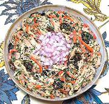

|
Chicken SaladR. Georgia - Kotsmis Pkhali | ||||
| Makes: Effort: Sched: DoAhead: |
1-1/2 # *** 4-1/4 hrs Yes |
This excellent salad can be served as a salad, or as a light summer main dish. It can be made hours, or even a day, ahead and refrigerated, so it is good for parties. | |||
|
------ 1-1/4 4 2 5 1/2 ------ 1/2 4 2 ------ 2 1/2 1/2 1/4 2/3 5 ------ 1/2 1/2 ------ |
--- # oz t --- c oz cl --- t t t t t T --- c c --- |
-- Poach Chicken Meat (1) Parsley sprig Celery stalk Onion Salt -- Ground Raisins Carrots Garlic -- Dressing Coriander Seeds Fenugreek, dried (2) Marigold Petals (3) Chili, dry (4) Salt Mayonnaise -- Herbs Cilantro Basil, Opal ---------- |
This recipe will make enough for 5 salads or 3 light lunches. Make - (4-1/4 hrs - 1-1/4 hrs work)
|